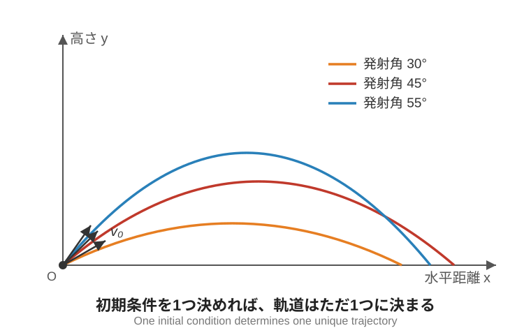
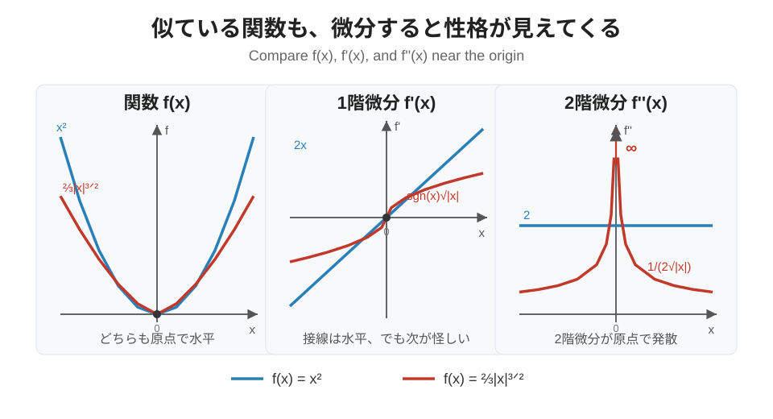
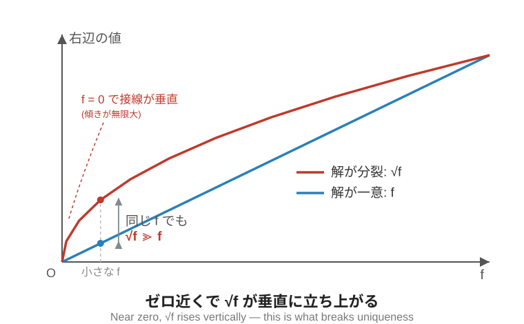

### ボールは止まり続けてもいいし、 ### 転がり出してもいい #### 〜ノートンのドームとニュートン力学の非決定論〜 <!-- TODO: title image --> --- ### 自己紹介 <div class="profile-container"> <div class="profile-left"> * さめ(мег-сск) * ⚛️ VRChat物理学集会の主催 * 🧑🎓 社会人学生として通信制大学在学中 * 得意分野: * 📸 コンピュータビジョン (画像認識/点群処理) * 🌍 空間情報処理 (地理情報/リモートセンシング) * ☁️ クラウドインフラ設計/IaC (AWS, GCP) * 学生時代は地球物理学を専攻 * 地球観測技術のエンジニアとして活動中 </div> <div class="profile-right"> <img src="assets/images/icon_circle.png" alt="avatar" height="350px" width="350px"> </div> </div> --- ## ニュートン力学と決定論 --- ### ニュートン力学と決定論 <div class="simple-box"> * **ニュートン力学は現代科学の基礎中の基礎** * 月までロケットを飛ばせることもニュートン力学のおかげ * 同じ場所から同じ速度でロケットを飛ばせば必ず同じ場所に到着する * 限界はあるけど(ブラウン運動や量子力学、相対論)、身近な現象はニュートン力学で記述できる </div> <br> <div class="highlight-box"> * **決定論**: 過去と現在が分かれば未来も決まる * 同じ条件でロケットを飛ばしたのにその度に異なる結果になると困る！ </div> --- ### ニュートンの運動方程式 <div class="simple-box"> * ニュートンの運動方程式 $$ m \ddot{\vec{x}} = \vec{f} $$ </div> <br> <div class="highlight-box"> * 常微分方程式を解けば物体の運動はすべて予測できる </div> --- ### 簡単な例: 放物運動 <div class="simple-box"> * 物体に働く力は重力だけ → 下向きの加速度 $g$ * **初期位置と初速度を決めて運動方程式を解けば、軌道はただ1つに決まる** </div> <p></p> --- ### ノートンのドーム <div class="simple-box"> * (ニュートン力学の適用範囲では) **微分方程式を解けば「たったひとつの未来」が正確にわかる (はず)** * 「このドームの頂点に置いたボールの動きは？」 </div> <img src="assets/images/norton's-dome.png" height="350px"> <div class="caption">Cited: Norton, John D. (2008). The Dome: An Unexpectedly Simple Failure of Determinism. Philosophy of Science 75 (5):786-798. </div> --- ## 微分方程式の解の一意性 --- ### 簡単な微分方程式の例 <div class="simple-box"> $$ \begin{equation*} \begin{cases} f'(t) = f(t) \\ f(0) = 1 \end{cases} \end{equation*} \Rightarrow f(t) = e^t $$ </div> <br> <div class="highlight-box"> * 微分方程式の解が1つに決まる * 「解の一意性 (uniqueness)」と呼ぶ * 少しネタバレ: 右辺の $f$ がすごくいい性質を満たしている </div> --- ### 解が一意に決まらない微分方程式 <div class="simple-box"> $$ \begin{equation*} \begin{cases} f'(t) = \sqrt{f(t)} \\ f(0) = 0 \end{cases} \end{equation*} \quad (x \geq 0) $$ </div> <br> <div class="highlight-box"> * 一見ありふれた何の変哲もない関数に見えるが… * **2つの解が矛盾なく両立する！** </div> --- ### 自明解: いつまでも止まり続ける <div class="simple-box"> $$ f(t) = 0 $$ </div> <br> <div class="highlight-box"> * この解をさっきの微分方程式に代入すると確かに成立する $$ f'(0) = \sqrt{f(0)} =0 $$ </div> --- ### 一般解: 放物線 <div class="simple-box"> $$ f(t) = \dfrac{t^2}{4} $$ </div> <br> <div class="highlight-box"> * この式も微分方程式に代入すると確かに成立する $$ f'(t) = \dfrac{t}{2} $$ $$\sqrt{f(t)} =\sqrt{\dfrac{t^2}{4}} = \dfrac{t}{2}$$ </div> --- ### 自明解と一般解は「つながる」 <div class="simple-box"> * 一般解 $f(t) = t^2/4$ は $t=0$ のとき $f(0) = 0$ * 自明解 $ f(t) = 0 $ と任意の時刻 $\tau$ でつなげられる * いつでも0から離れる解が存在できる </div> <br> <div class="highlight-box"> $$ f(t) = \begin{equation*} \begin{cases} 0 & (0 \leq t \leq \tau) \\ \dfrac{1}{4}(t-\tau)^2 & (t > \tau) \end{cases} \end{equation*} $$ </div> --- ### 解の一意性の破れ <div class="highlight-box"> * 原点に止まり続け、任意の時刻 $\tau$ で動き出す * 時刻 $\tau$ は任意 * 1秒後に動いてもいいし、100億年先まで止まっていてもいい $\to$ 数学として完全に正しい * 微分方程式の解が1つに定まらない * 解の一意性が成立しない </div> --- ### 解が一意な微分方程式との違い <div class="simple-box"> * $f'(t) = f(t) \Rightarrow f(t) = C e^t$ </div> <br> <div class="highlight-box"> * 積分定数 $C=0$ のとき自明解 $f(t) = 0 $ * 自明解は一般解の特殊なケース * $C \neq 0$ のときは自明解と重なる点を持たない * 自明解 $0$ に漸近できるが到達はできない * **自明解と一般解を繋げることができない！** </div> --- ### 複数回の微分で性格が変わる <div class="simple-box"> * $f(x)=x^2$ は、何回微分しても滑らか * $f(x)=\dfrac{2}{3}|x|^{3/2}$ は2回微分すると発散！ </div> <p></p> --- ### なぜ一意性が破れるのか？ <div class="simple-box"> * $f$ は常に有限の傾きを保っている * $ \sqrt{f} $ は$0$に近づくとき接線が垂直に立ち上がる * 傾き(微分係数)が無限大に発散 </div> <p></p> --- ### 物理の言葉で言うと……？ <div class="simple-box"> * $x(t)$: 位置 * $x'(t)$: 速度 * $x''(t)$: 加速度 </div> <br> <div class="highlight-box"> * 速度が0で静止していても**加速度が定義できない** * 停留点からわずかにずれただけで猛烈な加速度が働く * 停留点にいる物体は「いつ動き出すか」が定まらない </div> --- ## ノートンのドーム ### 微分方程式の解の一意性が ### ニュートン力学で破れる？ --- ### 働く力が $\sqrt{r}$ のドーム <div class="simple-box"> 物理哲学者ノートンが以下の形のドームを考えた $$ h(r) = -\frac{2}{3g} r^{3/2} $$ </div> <img src="assets/images/norton's-dome.png" height="300px"> --- ### ドームの頂点にボールを置くと？ <div class="simple-box"> 単位質点($m=1$)に働く力は $$ f = r'' = \sqrt{r} $$ 時刻 $t=0$ に頂点 $r=0$ にボールを置く </div> <br> <div class="highlight-box"> * ボールの運動は？ * 運動方程式が解の一意性を持っていない...？ </div> --- ### 決められないボールの未来 <div class="simple-box"> * 頂点のボールはずっと止まり続ける解が成立する * 時刻 $\tau$ まで静止してから動き出す解も成立する * しかもその $\tau$ がいつなのかわからない </div> <br> <div class="highlight-box"> $$ r(t) = 0 $$ $$ r(t) = \begin{equation*} \begin{cases} 0 & (0 \leq t \leq \tau) \\ \dfrac{1}{144}(t-\tau)^4 & (t > \tau) \end{cases} \end{equation*} $$ </div> --- ### ニュートン力学の中の非決定論 <div class="simple-box"> * このドームはニュートン力学のみで記述できる * しかしボールの未来は決定論で議論できない * ニュートン力学は微分方程式を解いて未来を予測できる (と信じられて実際にそれがうまくいっている) $\to$ 決定論的 * しかし、解が一意に定まらない！ $\to$ 非決定論的 </div> <br> <div class="highlight-box"> * ノートンの主張 **「標準的なニュートン力学の中にも、非決定論的な解を許すケースがある」** </div> --- ### ノートンの主張の補足 <div class="simple-box"> * 実際にこのドームを作れるとは言っていない * 現実にはそんな**理想的な**曲面や質点を作れない * ニュートン力学が常に非決定論的だ、と言っているわけではない * **特別なケースで解が一意に定まらない**だけ * 確率論の問題ではない * 何パーセントの確率でボールが1時間以内に転がり始めるか、といった議論は一切現れない </div> <br> <div class="highlight-box"> * **彼はニュートン力学を否定していない** * むしろ強固な理論のわずかな綻びを考えている </div> --- ## 現実の問題への適用 --- ### 実際どうなの？ <div class="simple-box"> * YouTubeでドームを作って実験した人がいた * [The Dome Paradox: A Loophole in Newton's Laws](https://www.youtube.com/watch?v=EjZB81jCGj4) * 頂点でしばらく止まったあと転がりだした </div> <div class="container"> <div class="col-left"> <img src="assets/images/norton's-dome-experiment-1.png" height="200px"> </div> <div class="col-right"> <img src="assets/images/norton's-dome-experiment-2.png" height="200px"> </div> </div> --- ### 動画を見た感想 <div class="simple-box"> * この実験結果はノートンの主張を支持もしないし否定もしない * 室温、大気中で手で置いているので理想的な状況とはかけ離れているはず * どれだけ条件を理想に近づけても、実験で見えるのは「いつ転がったか」だけ * **どれだけ待ったか/いつ転がったかは、ノートンの論点の決着にはならない** </div> --- ### 現実に現れうる解の一意性の問題 <div class="simple-box"> * ノートンのドームはあくまで思考実験 * しかし数値最適化問題や機械学習モデルも、停留点を探す問題 * 関数が滑らかでない点の近くでは数値解が不安定になりうる * 勾配や曲率が暴れて、収束判定が難しくなる * **「滑らかさ」は実用上も無視できない論点** </div> --- ## まとめとお知らせ --- ### まとめ <div class="simple-box"> * ボールが動くかもしれないし、動かないかもしれない摩訶不思議なノートンのドーム * どう思うかぜひ聞かせてください！ * 今日はあえて結論を言わないことにしました！ </div> <img src="assets/images/norton's-dome.png" height="300px"> --- ### お知らせ <div class="simple-box"> * 物理学集会は7-9月にお休みをします * 休止期間中に有志がGroupインスタンスを立てることはご自由にどうぞ！ * 有志が立てたインスタンスは主催が管理しませんが、トラブルがあったらご相談ください * 再開のお知らせはDiscordサーバーで！ * **再開は必ずします！** </div> --- ## Appendix --- ### Appendix 1 $f'(t)=\sqrt{f(t)}$ の解の導出 --- <div class="simple-box"> $$ \begin{equation*} \begin{cases} f'(t) = \sqrt{f(t)} \\ f(0) = 0 \end{cases} \end{equation*} \quad (x \geq 0) $$ </div> <br> <div class="highlight-box"> * 以下のように変数分離 $$ \frac{df}{\sqrt{f}} = dt $$ </div> --- <div class="simple-box"> 両辺を積分 $$ \int \frac{df}{\sqrt{f}} = \int dt $$ $$ 2\sqrt{f} = t + C $$ $$ f(t) = \frac{(t+C)^2}{4} $$ </div> --- <div class="simple-box"> * 初期条件 $f(0)=0$ を代入 $$ f(0) = \frac{C^2}{4} = 0 \Rightarrow C =0 $$ </div> <br> <div class="highlight-box"> * $f(t) = \dfrac{t^2}{4}$ が解の1つとして得られる (一般解) * 自明解は $ f(t) = 0 $ </div> --- ### なぜ2つの解が共存するのか？ <div class="simple-box"> * 一般解に $t=0$ を代入すると自明解と一致 * $ 0^2 / 4 =0 $ * 自明解と一般解がそれぞれ成り立つ * 自明解から一般解への遷移は任意 </div> --- ### Appendix 2 接線が垂直のとき何が起こるか？ --- ### 接線が垂直のとき何が起こるか？ <div class="simple-box"> * $f'$ が有界のとき: $0$ に近づくほど勢いが弱まり、抜け出すのに**無限の時間**がかかる * $f'$ が $\infty$ のとき: $0$ の近くでも勢いが残り、**有限の時間**で抜け出せる </div> --- ### 0からの脱出時間 <div class="highlight-box"> * $f$ が $0$ から $\varepsilon$ に到達する時間 $\tau(\varepsilon) = \displaystyle\int_0^\varepsilon \frac{df}{f'}$ を計算する $$ f' = f \Rightarrow \tau(\varepsilon) = \int_0^\varepsilon \frac{df}{f} = \infty $$ $$ f' = \sqrt{f} \Rightarrow \tau(\varepsilon) = \int_0^\varepsilon \frac{df}{\sqrt{f}} = 2\sqrt{\varepsilon} $$ </div> --- <br> <div class="highlight-box"> * 有限時間で出入りできる $\Rightarrow$ 時間を逆回しすると「頂点でちょうど静止」する運動が完結する * 系は時間に陽に依存しない（自励的）$\Rightarrow$ 静止をやめる時刻 $t_0$ は**いつでもよい** * $\Rightarrow$ 同じ初期条件から無数の解（$t_0$ をパラメータとする解の族） $$ f(t) = \begin{cases} 0 & (t \le t_0) \\ \dfrac{(t-t_0)^2}{4} & (t > t_0) \end{cases} \quad {}^{\forall} t_0 \ge 0 $$ </div> --- ### より詳しく知りたい人のために <div class="simple-box"> 以下のキーワードで調べると理解が深まるはず！ * 「連続」と「リプシッツ連続」の違い * ペアノの存在定理 * ピカール=リンデレフの定理 * リプシッツ条件とオズグッド条件 </div>